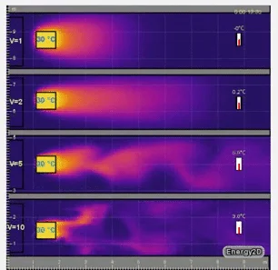
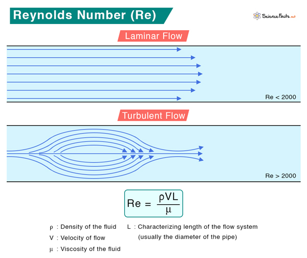
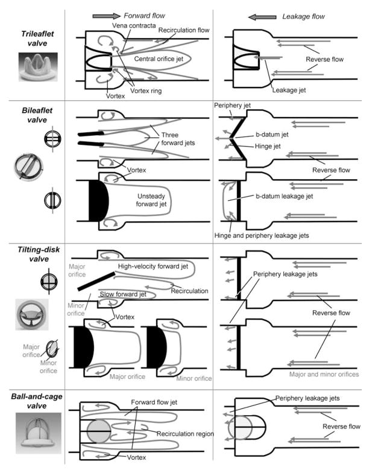

Table of contents |
|---|
| Abstract |
| Introduction |
| Laminar and turbulent flow |
| Types of AHVs and their fluid dynamics |
| Challenges in fluid dynamics |
| Conclusion |
| Reference |
Artificial heart valves (AHV) simply open and closes to let blood flow through your heart.
there are two types of flow, laminar meaning fluid flows smoothly and turbulent
meaning fluid flows chaotically, we don’t want turbulentflow as it can cause blood clots.
AHV designers have developed many AHVs from the cage ball valve to the bileaflet mechanical
heart valve and each time they improve from the previous model to better suit the patients’ needs.
Engineers when designing AHVs need to worry about leakage and shear stress and try and prevent
these factors from occurring as it could damage the AHV and cause blood clots dangering the patients
life.
AHVs have saved countless lives from the moment it was invented in 1952 to current day [4]
(Gott, Alejo and Cameron, 2003).AHVs are small contraptions that function as a heart valve,
people get AHVs if they have a faulty heart valve. AHVs rely heavily on fluid dynamics to function
properly this is because of the constant flow of blood that the AHV experiences. AHVs have improved
tremendously since its discovery and will keep improving as we understand more about fluid dynamics.


AHVs are complex and need a lot of planning to function as intended. One aspect that needs
to be thought about is how it would make the blood flow. Fluids can flow one of two ways, laminar
flow, or turbulent flow. Laminar flow is when the layers of fluid slide over one another without
mixing, whereas turbulent flow features chaotic, swirling patterns with irregular fluctuations [1]
(GeeksforGeeks, 2024).. These definitions alone can give an idea of which flow we would want,
and which flow we would try to avoid. Countless research has shown that turbulent blood flow can lead
to thrombosis, which is another way of saying blood clots [2](Garmo and Burns, 2018).. So, when AHV
designers design AHVs they would need to think extensively on how the AHV would cause the blood to
flow and they would manufacture a AHV that would produce the least turbulent flow so that the patient
would have a lower risk of developing blood clots.

figure 2
How can engineers predict if the AHV would produce a laminar flow without putting patients at risk?
Engineers use a mathematical equation called the Reynolds number to predict the flow of fluids, at
lower numbers the equation shows that the fluid is flowing in a laminar way but as the number increases
the more turbulent the fluid becomes. This would give engineers a risk-free way of predicting the flow
of fluids [3](Bhuyan, 2023).. The use of Reynolds Number equation would allow AHV designers to design a
heart valve that would produce the desired laminar flow without putting people lives at risk.
Re = pVL/μ (figure 2) this is Reynolds Number equation; it shows that if the fluid is less dense the more
laminar the fluid will flow this is also why people with an AHV usually need to take blood thinning medication.

figure 1>
ball-and-cage valve seen in figure (1)
This AHV was the first AHV to be successfully implanted into a patient, it was developed by Dr Charles
Hufnagel in the year1952 [4](Gott, Alejo and Cameron, 2003).. This AHV had a very simple design and worked by
lifting the ball from the cage as the blood flowed forward due to the blood having high pressure,
the blood would be let through the blood would then hit the walls forming circumferential jet propelling
the fluid forward [5](Figliola and Mueller, 1977).[6](Chandran, B. Khalighi and Chen, 1985).. After thefluid is settled
down the ball would drop back into its cage stopping any further blood flow or leakage.
The fluid hits obstacles which would cause disturbances in the flow which would most likely cause turbulent
flow to occur causing a higher chance of blood clots.
the bileaflet mechanical heart valve seen in figure (1)
This AHV is the most used AHV today. the AHV has three openings, but the most significant part of the flow
emerges from the two side openings, the blood flows as normal going through but after the flow stops the
flaps close shutting off the flow of fluid preventing leakage [7](Dasi et al., 2009)..
The fluid is only prevented by two thin flaps meaning there wouldn’t be much disturbance in the flow so the
flow should be very laminar however, this does come with other disadvantages like leakage.
challenges engineers need to worry about when designing an AHV is shear stress and leakage. Shear stress is
a force that cause deformation of material [8](Britannica, 2019). AHVs experience shear stress due to the
high-pressure flow. We can’t prevent shear stress but there are ways of minimising it, the two most common
ways of minimising shear stress is by using different materials that can last for longer or decreasing the
flow rate so that there is less force on the material [9](Autodesk.com, 2024).. AHV designers would need
to think about this as they wouldn’t want the AHV to develop any deformities as it could put the patient more
at risk by increasing the chance of blood clots and with enough stress the AHV could tear causing even more problems.
Another thing AHV designers need to think about while designing AHVs is if it would cause leakage. It is
common for AHVs to start leaking but usually it isn’t too significant for surgery so its left alone but
sometimes very large leaks can occur which could cause heart failure so surgery would be needed
[10](Smolka’ and Wojakowski’, n.d.).. The only prevention of AHVs leaking is by fitting in the AHV so that there are
no gaps between it and the wall of the heart and the only way to fix a leakage is by surgery.
In conclusion although AHVs still have problems that occur from time to time they fulfil their function and
work without any major problems occurring. Engineers have worked more than 70 years on developing a AHV that
would last for a long time and function without any problems and each year they come closer to reaching this goal.
[1]GeeksforGeeks. (2024). Difference between Laminar and Turbulent Flow. [online] Available at: https://www.geeksforgeeks.org/laminar-and-turbulent-flow/.
[2]GeeksforGeeks. (2024). Difference between Laminar and Turbulent Flow. [online] Available at: https://www.geeksforgeeks.org/laminar-and-turbulent-flow/.
[3]Bhuyan, S. (2023). Reynolds Number: Definition, Equation, and Solved Problem. [online] Science Facts. Available at: https://www.sciencefacts.net/reynolds-number.html.
[4]Gott, V.L., Alejo, D.E. and Cameron, D.E. (2003). Mechanical heart valves: 50 years of evolution. The Annals of Thoracic Surgery, [online] 76(6), pp.S2230–S2239. doi:https://doi.org/10.1016/j.athoracsur.2003.09.002.
[5]Figliola, R.S. and Mueller, T.J. (1977). Fluid Stresses in the Vicinity of Disk, Ball, and Tilting Disk Prosthetic Heart Valves From In-Vitro Measurements. Journal of Biomechanical Engineering, [online] 99(4), pp.173–177. doi:https://doi.org/10.1115/1.3426286.
[6]Chandran, K.B., B. Khalighi and Chen, C.-J. (1985). Experimental study of physiological pulsatile flow past valve prostheses in a model of human aorta—I. Caged ball valves. Journal of Biomechanics, 18(10), pp.763–772. doi:https://doi.org/10.1016/0021-9290(85)90051-x.
[7]Dasi, L.P., Simon, H.A., Sucosky, P. and Yoganathan, A.P. (2009). FLUID MECHANICS OF ARTIFICIAL HEART VALVES. Clinical and Experimental Pharmacology and Physiology, 36(2), pp.225–237. doi:https://doi.org/10.1111/j.1440-1681.2008.05099.x.
[8]Britannica (2019). Shear Stress | Physics. In: Encyclopædia Britannica. [online] Available at: https://www.britannica.com/science/shear-stress.
[9]Autodesk.com. (2024). Help. [online] Available at: https://help.autodesk.com/view/MFIA/2024/ENU/?guid=LM_SHEAR_STRESS_PROBLEMS [Accessed 6 Dec. 2024].
[10]Smolka’, G. and Wojakowski’, W. (n.d.). Paravalvular leak – important complication after implantation of prosthetic valve. [online] www.escardio.org. Available at: https://www.escardio.org/Journals/E-Journal-of-Cardiology-Practice/Volume-9/Paravalvular-leak-important-complication-after-implantation-of-prosthetic-valv.